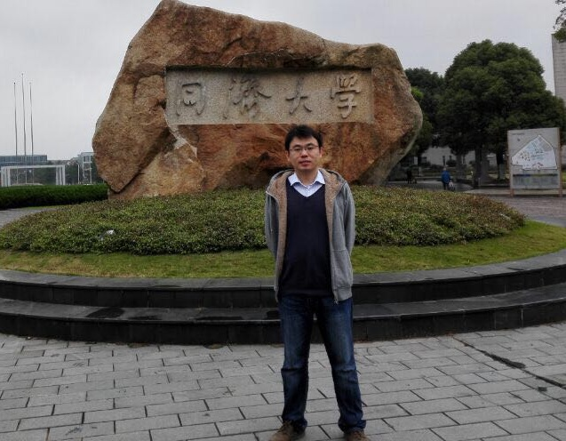

返回顶部
杨晓伟 教授
同济大学，材料科学与工程学院教授，高等研究院特聘研究员，博导
学术任职
清华深圳研究院客座研究员
科技部青年973计划首席科学家
《储能科学与技术》编委
Adv Mater、Adv Energy Mater、ACS Nano、Energy Environ Sci和Chem
Commun等期刊审稿人
个人荣誉
2011获“唐敖庆奖学金”
2013获“上海优秀博士论文”
2014聘为“同济大学基础学科领航人才”
2015科技部青年973项目首席科学家；获“上海市人才发展基金”资助
2016获“上海市曙光学者”；任同济大学“材料——新能源汽车创新班”班主任
学术成就
从2004年以来主要从事高性能电化学储能技术、新型碳材料和生物界面材料的研究，在基于石墨烯的宏观组装、结构调控和超级电容器、锂离子电池等领域取得了重大创新性研究成果。以第一或通讯作者发表的代表性成果包括：
建立电极/电解质体系的系统工程，发展液体调控多孔材料的软化学方法，获得超高密度但具多孔性的石墨烯超级电容器 (Science 2013，被引用约480次)；
利用溶剂化效应抑制石墨烯团聚，构建多孔石墨烯薄膜，实现超快速充放电(Adv. Mater. 2011，封面，被引用约490次)；
探索碳纳米管在碳纤维表面的垂直生长方式，获得电子、离子快速传输的多级结构(Chem. Mater. 2015，封面)；
开发新型的干细胞生长因子缓释体系，促进肝细胞体内修复(Adv. Sci. 2016)；获得国际专利一项（PCT/AU2014/000197）；
撰写一章英文专著（Lithium-sulfur batteries based on carbon nanomaterials, Carbon Nanomaterials for Advanced Energy Systems, ISBN: 978-1-118-58078-3）。
上述成果获得了包括多位中外科学院院士在内的同行专家、Science等国内外出版商等关注和好评，也被中国化工学会授予“侯德榜化工青年科技奖”。
部分代表性论文及著作
1.Yang, X., Zhu, J., Qiu, L. & Li, D. Bioinspired effective prevention of restacking in multilayered graphene films: Towards the next generation of high-performance supercapacitors. Advanced Materials 23, 2833-2838, doi:10.1002/adma.201100261 (2011).
2.Yang, X. et al. Ordered gelation of chemically converted graphene for next-generation electroconductive hydrogel films. Angewandte Chemie - International Edition 50, 7325-7328, doi:10.1002/anie.201100723 (2011).
3.Yang, X., Cheng, C., Wang, Y., Qiu, L. & Li, D. Liquid-mediated dense integration of graphene materials for compact capacitive energy storage. Science 341, 534-537, doi:10.1126/science.1239089 (2013).
4.Wang, Y., Yang, X., Qiu, L. & Li, D. Revisiting the capacitance of polyaniline by using graphene hydrogel films as a substrate: The importance of nano-architecturing. Energy and Environmental Science 6, 477-481, doi:10.1039/c2ee24018a (2013).
5.Li, H., Yang, X. et al. Dense integration of graphene and sulfur through the soft approach for compact lithium/sulfur battery cathode. Nano Energy 12, 468-475, doi:10.1016/j.nanoen.2015.01.007 (2015).
返回顶部